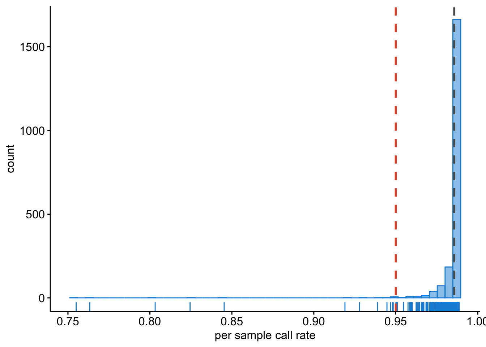
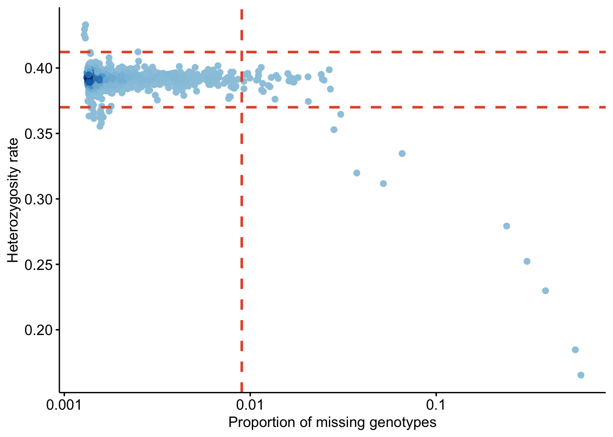
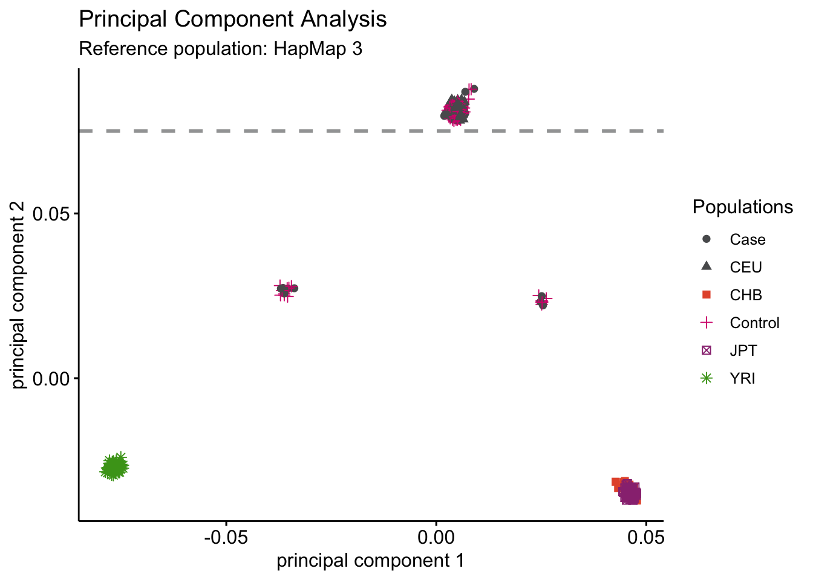

Chapter 4 Sample QC
Let’s start with the per-sample quality control.
4.1 Sex
We need to identify of individuals with discordant sex information comparing phenotypic and genotypic data. Let’s calculate the mean homozygosity rate across X-chromosome markers for each individual in the study.
plink --bfile rawdata/rawdata --check-sex --out rawdata/rawdata
This produces a file with the following columns:
- FID Family ID
- IID Within-family ID
- PEDSEX Sex code in input file
- SNPSEX Imputed sex code (1 = male, 2 = female, 0 = unknown)
- STATUS ‘OK’ if PEDSEX and SNPSEX match and are nonzero, ‘PROBLEM’ otherwise
- F Inbreeding coefficient, considering only X chromosome. Not present with ‘y-only’.
- YCOUNT Number of nonmissing genotype calls on Y chromosome. Requires ‘ycount’/‘y-only’.
We need to get a list of individuals with discordant sex data.
cat rawdata/rawdata.sexcheck | awk '$5 =="STATUS" || $5 =="PROBLEM"' > rawdata/rawdata.sexprobs.txtLet’s have a look at the results.
cat rawdata/rawdata.sexprobs.txtsexissues <- data.table::fread(paste0(COURSE_loc,"/rawdata/rawdata.sexprobs.txt"))
knitr::kable(sexissues, caption = "Sex issues")| FID | IID | PEDSEX | SNPSEX | STATUS | F |
|---|---|---|---|---|---|
| 772 | 772 | 2 | 0 | PROBLEM | 0.3084 |
| 853 | 853 | 2 | 0 | PROBLEM | 0.3666 |
| 1920 | 1920 | 2 | 0 | PROBLEM | 0.4066 |
When the homozygosity rate (F) is more than 0.2, but less than 0.8, the genotype data are inconclusive regarding the sex of an individual and these are marked in column SNPSEX with a 0, and the column STATUS “PROBLEM”.
Report the IDs of individuals with discordant sex information to those who conducted sex phenotyping. In situations in which discrepancy cannot be resolved, add the family ID (FID) and individual ID (IID) of the samples to a file named “fail-sexcheck-qc.txt” (one individual per line, tab delimited).
grep "PROBLEM" rawdata/rawdata.sexcheck | awk '{ print $1, $2}' > rawdata/fail-sexcheck-qc.txt
4.2 Sample Callrates
Let’s get an overview of the missing data per sample and per SNP.
plink --bfile rawdata/rawdata --missing --out rawdata/rawdata
This produces two files, rawdata/rawdata.imiss and rawdata/rawdata.lmiss. In the .imiss file the N_MISS column denotes the number of missing SNPs, and the F_MISS column denotes the proportion of missing SNPs per individual.
raw_IMISS <- data.table::fread(paste0(COURSE_loc, "/rawdata/rawdata.imiss"))
raw_IMISS$callrate <- 1 - raw_IMISS$F_MISS
ggpubr::gghistogram(raw_IMISS, x = "callrate",
add = "mean", add.params = list(color = "#595A5C", linetype = "dashed", size = 1),
rug = TRUE, bins = 50,
color = "#1290D9", fill = "#1290D9",
xlab = "per sample call rate") +
geom_vline(xintercept = 0.95, linetype = "dashed",
color = "#E55738", size = 1)## Warning: geom_vline(): Ignoring `mapping` because `xintercept` was provided.## Warning: geom_vline(): Ignoring `data` because `xintercept` was provided.
The grey dashed line indicates the mean call rate, while the red dashed line indicates the threshold we had determined above.
4.3 Heterozygosity rate
To properly calculate heterozygosity rate and relatedness (identity-by-descent [IBD]) we need to do four things:
- pre-clean the data to get a high-quality set,
- of independent SNPs,
- exclude long-range linkage disequilibrium (LD) blocks that bias with these calculations, and
- exclude A/T and C/G SNPs as these may be ambivalent in interpretation when frequencies between cases and controls are close (MAF ± 0.45),
- remove all non-autosomal SNPs.
We will use the following settings:
- remove A/T and C/G SNPs with the flag
--exclude rawdata/all.atcg.variants.txt, - call rate <1% with the flag
--geno 0.10, - Hardy-Weinberg Equilibrium (HWE) p-value > 1x10-3 with the flag
--hwe 1e-3, - and MAF>10% with the flag
--maf 0.10, - prune the data to only select independent SNPs (with low LD r^2) of one pair each with
r^2 = 0.2with the flags--indep-pairwise 100 10 0.2and--extract rawdata/raw-GWA-data.prune.in, - SNPs in long-range LD regions (for example: MHC chr 6 25.8-36Mb, chr 8 inversion 6-16Mb, chr17 40-45Mb, and a few more) with the flag
--exclude range rawdata/exclude_problematic_range.txt, - remove non-autosomal SNPs with the flag
--allow-no-sex --autosome.
First, get a list of A/T and C/G SNPs.
cat rawdata/rawdata.bim | \
awk '($5 == "A" && $6 == "T") || ($5 == "T" && $6 == "A") || ($5 == "C" && $6 == "G") || ($5 == "G" && $6 == "C")' | awk '{ print $2, $1, $4, $3, $5, $6 }' \
> rawdata/all.atcg.variants.txtSecond, clean the data and get a list of independent SNPs.
plink --bfile rawdata/rawdata \
--allow-no-sex --autosome \
--maf 0.10 --geno 0.10 --hwe 1e-3 \
--indep-pairwise 100 10 0.2 \
--exclude range rawdata/exclude_problematic_range.txt \
--make-bed --out rawdata/rawdata.clean.tempPlease note, we have create a dataset without taking into account LD structure. Thus the flag
--indep-pairwise 100 10 0.2doesn’t actually work. However, with real-data you can use it to prune out unwanted SNPs in high LD.
Third, exclude the pruned SNPs. Note, how we include a file to exclude high-LD for the purpose of the practical.
plink --bfile rawdata/rawdata.clean.temp \
--extract rawdata/raw-GWA-data.prune.in \
--make-bed --out rawdata/rawdata.clean.ultraclean.temp
Fourth, remove the A/T and C/G SNPs.
plink --bfile rawdata/rawdata.clean.ultraclean.temp \
--exclude rawdata/all.atcg.variants.txt \
--make-bed --out rawdata/rawdata.clean.ultracleanPlease note, this dataset doesn’t actually include this type of SNP, hence
rawdata/all.atcg.variants.txtis empty! Again, you can use this command in real-data to exclude A/T and C/G SNPs.
Lastly, remove the temporary files.
rm -v rawdata/*.temp*
Finally, we can calculate the heterozygosity rate.
plink --bfile rawdata/rawdata.clean.ultraclean --het --out rawdata/rawdata.clean.ultracleanThis creates the file rawdata/rawdata.clean.ultraclean.het, in which the third column denotes the observed number of homozygous genotypes, O(Hom), and the fifth column denotes the number of nonmissing genotypes, N(NM), per individual. We can now calculate the observed heterozygosity rate per individual using the formula (N(NM) - O(Hom))/N(NM).
Often there is a correlation between heterozygosity rate and missing data. Thus, we should plot the observed heterozygosity rate per individual on the x-axis and the proportion of missing SNP, that is the ‘SNP call rate’, per individuals on the y-axis.
raw_HET <- data.table::fread(paste0(COURSE_loc, "/rawdata/rawdata.clean.ultraclean.het"))
raw_IMISS$logF_MISS = log10(raw_IMISS$F_MISS)
prop_miss = -1.522879
raw_HET$meanHet = (raw_HET$`N(NM)` - raw_HET$`O(HOM)`)/raw_HET$`N(NM)`
lower_meanHet = mean(raw_HET$meanHet) - (2*sd(raw_HET$meanHet))
upper_meanHet = mean(raw_HET$meanHet) + (2*sd(raw_HET$meanHet))
raw_IMISSHET = merge(raw_IMISS, raw_HET, by = "IID")
raw_IMISSHET$FID.y <- NULL
colnames(raw_IMISSHET)[colnames(raw_IMISSHET)=="FID.x"] <- "FID"
colors <- densCols(raw_IMISSHET$logF_MISS, raw_IMISSHET$meanHet)## Warning in KernSmooth::bkde2D(x, bandwidth = bandwidth, gridsize = nbin, :
## Binning grid too coarse for current (small) bandwidth: consider increasing
## 'gridsize'ggpubr::ggscatter(raw_IMISSHET, x = "logF_MISS", y = "meanHet",
color = colors,
xlab = "Proportion of missing genotypes", ylab = "Heterozygosity rate") +
scale_x_continuous(labels=c("-3" = "0.001", "-2" = "0.01",
"-1" = "0.1", "0" = "1")) +
geom_hline(yintercept = lower_meanHet, linetype = "dashed",
color = "#E55738", size = 1) +
geom_hline(yintercept = upper_meanHet, linetype = "dashed",
color = "#E55738", size = 1) +
geom_vline(xintercept = prop_miss, linetype = "dashed",
color = "#E55738", size = 1)## Warning in if (color %in% names(data) & is.null(add.params$color))
## add.params$color <- color: the condition has length > 1 and only the first
## element will be used
Examine the plot to decide reasonable thresholds at which to exclude individuals based on elevated missing or extreme heterozygosity. We chose to exclude all individuals with a genotype failure rate >= 0.03 (vertical dashed line) and/or a heterozygosity rate ± 3 s.d. from the mean (horizontal dashed lines). Add the FID and IID of the samples failing this QC to the file named fail-imisshet-qc.txt.
How would you create this file?
raw_IMISSHETsub = subset(raw_IMISSHET, logF_MISS > prop_miss | (meanHet < lower_meanHet | meanHet > upper_meanHet),
select = c("FID", "IID"))
data.table::fwrite(raw_IMISSHETsub, paste0(COURSE_loc,"/rawdata/fail-raw_IMISSHETsub.txt"), sep =" ")4.5 Ancestral background
4.5.1 HapMap 3
We will project our data to a reference, in this example HapMap Phase II (HapMap3), which includes individuals from four distinct global populations, but it could also be 1000G phase 1. Or any other reference depending on the dataset.
To this end we will merge our data with HapMap3. The alleles at each marker must be aligned to the same DNA strand to allow our data to merge correctly. Because not all SNPs are required for this analysis, A->T and C->G SNPs, which are more difficult to align, can be omitted.
Let’s start by creating a new BED file, excluding from the GWA data those SNPs that do not feature in the genotype data of the four original HapMap3 populations.
plink --bfile rawdata/rawdata --extract reference/hapmap3r2_CEU.CHB.JPT.YRI.no-at-cg-snps.txt --make-bed --out rawdata/rawdata.hm3Now, let’s try to merge rawdata/rawdata.hm3 with the HapMap data and extract the pruned SNP set from above.
plink --bfile rawdata/rawdata.hm3 --bmerge reference/hapmap3r2_CEU.CHB.JPT.YRI.founders.no-at-cg-snps --extract rawdata/raw-GWA-data.prune.in --make-bed --out rawdata/rawdata.hapmap3r2.prunedYou probably get an error like below:
Error: 59 variants with 3+ alleles present.
* If you believe this is due to strand inconsistency, try --flip with
rawdata/rawdata.hapmap3r2.pruned-merge.missnp.
(Warning: if this seems to work, strand errors involving SNPs with A/T or C/G
alleles probably remain in your data. If LD between nearby SNPs is high,
--flip-scan should detect them.)
* If you are dealing with genuine multiallelic variants, we recommend exporting
that subset of the data to VCF (via e.g. '--recode vcf'), merging with
another tool/script, and then importing the result; PLINK is not yet suited
to handling them.Because all A->T and C->G SNPs have been removed before undertaking this analysis, all other SNPs that are discordant for DNA strands between the two data sets are listed in the rawdata.hapmap3r2.pruned-merge.missnp file. To align the strands across the data sets and successfully complete the merge, we can do the following:
plink --bfile rawdata/rawdata --extract reference/hapmap3r2_CEU.CHB.JPT.YRI.no-at-cg-snps.txt --flip rawdata/rawdata.hapmap3r2.pruned-merge.missnp --make-bed --out rawdata/rawdata.hm3And repeat this:
plink --bfile rawdata/rawdata.hm3 --bmerge reference/hapmap3r2_CEU.CHB.JPT.YRI.founders.no-at-cg-snps --extract rawdata/raw-GWA-data.prune.in --make-bed --out rawdata/rawdata.hapmap3r2.prunedLet’s not be lazy and clean this dataset too.
plink --bfile rawdata/rawdata.hapmap3r2.pruned \
--allow-no-sex --autosome \
--maf 0.10 --geno 0.10 --hwe 1e-3 \
--indep-pairwise 100 10 0.2 \
--exclude range rawdata/exclude_problematic_range.txt \
--make-bed --out rawdata/rawdata.hapmap3r2.pruned.clean4.5.2 Principal Component Analysis
Using a Principal Component Analysis (PCA) we can reduce the dimensions of the data, and project the “ancestral distances”. In other words, the principal component 1 (the first dimension) and principal component 2 (the second dimension) which will capture most of the variation in the data and represent how much each sample is alike the next.
First, we make a copy of the BIM and FAM-files.
cp -v rawdata/rawdata.hapmap3r2.pruned.bim rawdata/rawdata.hapmap3r2.pruned.pedsnp
cp -v rawdata/rawdata.hapmap3r2.pruned.fam rawdata/rawdata.hapmap3r2.pruned.pedind4.5.2.1 Installing EIGENSOFT
Now, we are ready to perform the PCA using smartPCA. For this EIGENSOFT needs to be installed. Unfortunately, this doesn’t work on this VirtualMachine you are working on - you need gsl, openblas and llvm to make it work.
Installing EIGENSOFT
I am still sharing the code you’ll need - you could try this on your personal MacBook for instance.
mkdir -v $HOME/git
cd $HOME/git
git clone https://github.com/DReichLab/EIG.git
cd EIG/src
make
make installExecuting smartPCA
Should you run this on your personal laptop, be aware it will take a few minutes to do so - perfect moment for a cup of coffee or to stretch your legs.
perl ~/git/EIG/bin/smartpca.perl \
-i rawdata/rawdata.hapmap3r2.pruned.bed \
-a rawdata/rawdata.hapmap3r2.pruned.pedsnp \
-b rawdata/rawdata.hapmap3r2.pruned.pedind \
-k 10 \
-o rawdata/rawdata.hapmap3r2.pruned.pca \
-p rawdata/rawdata.hapmap3r2.pruned.plot \
-e rawdata/rawdata.hapmap3r2.pruned.eval \
-l rawdata/rawdata.hapmap3r2.pruned.log \
-m 5 \
-t 10 \
-s 6.0 \
-w reference/hapmap3r2_CEU.CHB.JPT.YRI-pca-populations.txtSee below an explanation of the above commands:
../bin/smartpca.perl
-i example.geno : genotype file in any format (see ../CONVERTF/README) -a example.snp : snp file in any format (see ../CONVERTF/README) -b example.ind : indiv file in any format (see ../CONVERTF/README) -k k : (Default is 10) number of principal components to output -o example.pca : output file of principal components. Individuals removed as outliers will have all values set to 0.0 in this file. -p example.plot : prefix of output plot files of top 2 principal components. (labeling individuals according to labels in indiv file) -e example.eval : output file of all eigenvalues -l example.log : output logfile -m maxiter : (Default is 5) maximum number of outlier removal iterations. To turn off outlier removal, set -m 0. -t topk : (Default is 10) number of principal components along which to remove outliers during each outlier removal iteration. -s sigma : (Default is 6.0) number of standard deviations which an individual must exceed, along one of topk top principal components, in order to be removed as an outlier.
OPTIONAL FLAGS: -w poplist : compute eigenvectors using populations in poplist only, where poplist is an ASCII file with one population per line -y plotlist : output plot will include populations in plotlist only, where plotlist is an ASCII file with one population per line -z badsnpname : list of SNPs which should be excluded from the analysis -q YES/NO : If set to YES, assume that there is a single population and the population field contains real-valued phenotypes. (Corresponds to qtmode parameter in smartpca program.) The default value for this parameter is NO.
NOTE: I made sure that in your download the results from this analysis are available for usage. That is:
- rawdata/rawdata.hapmap3r2.pruned.evec
- rawdata/rawdata.hapmap3r2.pruned.par
4.5.2.2 PCA plotting
Now that we have calculated PCs, we can start plotting them. Let’s create a scatter diagram of the first two principal components, including all individuals in the file rawdata.hapmap3r2.pruned.pca.evec (the first and second principal components are columns 2 and 3, respectively). Use the data in column 4 to color the points according to sample origin. An R script for creating this plot (scripts/plot-pca-results.Rscript) is provided (although any standard graphing software can be used).
PCA <- data.table::fread(paste0(COURSE_loc,"/rawdata/rawdata.hapmap3r2.pruned.pca.evec"), header = FALSE, skip = 1)
# Case/Control -> black, pch = "+"
# CEU = 3 -> red, pch = 20
# CHB = 4 -> pink, pch = 20
# JPT = 5 -> purple, pch = 20
# YRI = 6 -> green, pch = 20
PCA$V12[PCA$V12 == "Case"] <- "Case" #595A5C
PCA$V12[PCA$V12 == "Control"] <- "Control" #595A5C
PCA$V12[PCA$V12 == "3"] <- "CEU" #E55738
PCA$V12[PCA$V12 == "4"] <- "CHB" #D5267B
PCA$V12[PCA$V12 == "5"] <- "JPT" #9A3480
PCA$V12[PCA$V12 == "6"] <- "YRI" #49A01D
PCAplot <- ggpubr::ggscatter(PCA, x = "V2", y = "V3",
color = "V12",
palette = c("#595A5C", "#595A5C", "#E55738", "#D5267B", "#9A3480", "#49A01D"),
shape = "V12",
xlab = "principal component 1", ylab = "principal component 2") +
geom_hline(yintercept = 0.075, linetype = "dashed",
color = "#A2A3A4", size = 1)
ggpubr::ggpar(PCAplot,
title = "Principal Component Analysis",
subtitle = "Reference population: HapMap 3",
legend.title = "Populations", legend = "right")
Derive PC1 and PC2 thresholds so that only individuals who match the given ancestral population are included. For populations of European descent, this will be either the CEU or TSI HapMap3 individuals. Here, we chose to exclude all individuals with a second principal component score less than 0.072.
Write the FID and IID of these individuals to a file called fail-ancestry-QC.txt.
cat rawdata/rawdata.hapmap3r2.pruned.pca.evec | tail -n +2 | \
awk '$3 < 0.075' | awk '{ print $1 }' | awk -F":" '{ print $1, $2 }' > rawdata/fail-ancestry-QC.txtChoosing which thresholds to apply (and thus which individuals to remove) is not a straightforward process. The key is to remove those individuals with greatly divergent ancestry, as these samples introduce the most bias to the study. Identification of more fine-scale ancestry can be conducted by using less divergent reference samples (e.g., within Europe, stratification could be identified using the CEU, TSI (Italian), GBR (British), FIN (Finnish) and IBS (Iberian) samples from the 1,000 Genomes Project (http://www.1000genomes.org/)). Robust identification of fine-scale population structure often requires the construction of many (2–10) principal components.
4.5.3 1000G phase 1
You could do the above again but now with projecting the 1000G phase 1 populations. The all the 1000G phase 1 data is provided as tutorial data (), as well as a subset including only the variants in our rawdata. You can try and run the PCA with 1000G and project the results – let’s do that in our spare time and continue for now with the QC based on HM3. But please, do show us the results tomorrow … :-) For your convenience there are some codes below which you may need.
Get a list of relevant variants.
cat rawdata/rawdata.bim | grep "rs" > rawdata/all.variants.txtExtract those from the 1000G phase 1 data.
plink --bfile reference/1kg_phase1_all/1kg_phase1_all --extract rawdata/all.variants.txt --make-bed --out reference/1kg_phase1_all/1kg_phase1_rawGet a list of A/T and C/G variants from 1000G to exclude.
cat reference/1kg_phase1_all/1kg_phase1_raw.bim | \
awk '($5 == "A" && $6 == "T") || ($5 == "T" && $6 == "A") || ($5 == "C" && $6 == "G") || ($5 == "G" && $6 == "C")' | awk '{ print $2, $1, $4, $3, $5, $6 }' \
> reference/1kg_phase1_all/all.1kg.atcg.variants.txtExclude those A/T and C/G variants in both datasets.
plink --bfile reference/1kg_phase1_all/1kg_phase1_raw --exclude reference/1kg_phase1_all/all.1kg.atcg.variants.txt --make-bed --out reference/1kg_phase1_all/1kg_phase1_raw_no_atcg
plink --bfile rawdata/rawdata --exclude reference/1kg_phase1_all/all.1kg.atcg.variants.txt --make-bed --out rawdata/rawdata_1kg_phase1_raw_no_atcgTry and merge the data while extracting the pruned SNP-set.
plink --bfile rawdata/rawdata_1kg_phase1_raw_no_atcg --bmerge reference/1kg_phase1_all/1kg_phase1_raw_no_atcg --extract rawdata/raw-GWA-data.prune.in --make-bed --out rawdata/rawdata.1kg_phase1.prunedThere probably is an error …
Error: 72 variants with 3+ alleles present.
* If you believe this is due to strand inconsistency, try --flip with
rawdata/rawdata.1kg_phase1.pruned-merge.missnp.
(Warning: if this seems to work, strand errors involving SNPs with A/T or C/G
alleles probably remain in your data. If LD between nearby SNPs is high,
--flip-scan should detect them.)
* If you are dealing with genuine multiallelic variants, we recommend exporting
that subset of the data to VCF (via e.g. '--recode vcf'), merging with
another tool/script, and then importing the result; PLINK is not yet suited
to handling them.
See https://www.cog-genomics.org/plink/1.9/data#merge3 for more discussion.So let’s flip some variants.
plink --bfile rawdata/rawdata --exclude reference/1kg_phase1_all/all.1kg.atcg.variants.txt --flip rawdata/rawdata.1kg_phase1.pruned-merge.missnp --make-bed --out rawdata/rawdata_1kg_phase1_raw_no_atcgLet’s try and merge the data while extracting the pruned SNP-set.
plink --bfile rawdata/rawdata_1kg_phase1_raw_no_atcg --bmerge reference/1kg_phase1_all/1kg_phase1_raw_no_atcg --extract rawdata/raw-GWA-data.prune.in --make-bed --out rawdata/rawdata.1kg_phase1.prunedThere still is an error – there are multi-allelic variants present which PLINK can’t handle.
Error: 14 variants with 3+ alleles present.
* If you believe this is due to strand inconsistency, try --flip with
rawdata/rawdata.1kg_phase1.pruned-merge.missnp.
(Warning: if this seems to work, strand errors involving SNPs with A/T or C/G
alleles probably remain in your data. If LD between nearby SNPs is high,
--flip-scan should detect them.)
* If you are dealing with genuine multiallelic variants, we recommend exporting
that subset of the data to VCF (via e.g. '--recode vcf'), merging with
another tool/script, and then importing the result; PLINK is not yet suited
to handling them.
See https://www.cog-genomics.org/plink/1.9/data#merge3 for more discussion.Let’s just remove these multi-allelic variants.
plink --bfile rawdata/rawdata_1kg_phase1_raw_no_atcg --exclude rawdata/rawdata.1kg_phase1.pruned-merge.missnp --make-bed --out rawdata/rawdata_1kg_phase1_raw_no_atcg_biNow we should be able to merge the data…
plink --bfile rawdata/rawdata_1kg_phase1_raw_no_atcg_bi --bmerge reference/1kg_phase1_all/1kg_phase1_raw_no_atcg --extract rawdata/raw-GWA-data.prune.in --make-bed --out rawdata/rawdata.1kg_phase1.prunedThat worked! Let’s run a PCA.
cp -v rawdata/rawdata.1kg_phase1.pruned.bim rawdata/rawdata.1kg_phase1.pruned.pedsnp
cp -v rawdata/rawdata.1kg_phase1.pruned.fam rawdata/rawdata.1kg_phase1.pruned.pedindperl ~/git/EIG/bin/smartpca.perl \
-i rawdata/rawdata.1kg_phase1.pruned.bed \
-a rawdata/rawdata.1kg_phase1.pruned.pedsnp \
-b rawdata/rawdata.1kg_phase1.pruned.pedind \
-k 10 \
-o rawdata/rawdata.1kg_phase1.pruned.pca \
-p rawdata/rawdata.1kg_phase1.pruned.plot \
-e rawdata/rawdata.1kg_phase1.pruned.eval \
-l rawdata/rawdata.1kg_phase1.pruned.log \
-m 5 \
-t 10 \
-s 6.0 \
-w reference/1kg_phase1_all/1kg-pca-populations.txtAnd we can try to plot this result as well.
PCA_1kG <- data.table::fread(paste0(COURSE_loc,"/rawdata/rawdata.1kg_phase1.pruned.pca.evec"), header = FALSE, skip = 1)
# Population Description Super population Code Counts
# ASW African Ancestry in Southwest US AFR 4 #49A01D
# CEU Utah residents with Northern and Western European ancestry EUR 7 #E55738
# CHB Han Chinese in Bejing, China EAS 8 #9A3480
# CHS Southern Han Chinese, China EAS 9 #705296
# CLM Colombian in Medellin, Colombia MR 10 #8D5B9A
# FIN Finnish in Finland EUR 12 #2F8BC9
# GBR British in England and Scotland EUR 13 #1290D9
# IBS Iberian populations in Spain EUR 16 #1396D8
# JPT Japanese in Tokyo, Japan EAS 18 #D5267B
# LWK Luhya in Webuye, Kenya AFR 20 #78B113
# MXL Mexican Ancestry in Los Angeles, California AMR 22 #F59D10
# PUR Puerto Rican in Puerto Rico AMR 25 #FBB820
# TSI Toscani in Italy EUR 27 #4C81BF
# YRI Yoruba in Ibadan, Nigeria AFR 28 #C5D220
PCA_1kG$V12[PCA_1kG$V12 == "Case"] <- "Case"
PCA_1kG$V12[PCA_1kG$V12 == "Control"] <- "Control"
PCA_1kG$V12[PCA_1kG$V12 == "4"] <- "ASW"
PCA_1kG$V12[PCA_1kG$V12 == "7"] <- "CEU"
PCA_1kG$V12[PCA_1kG$V12 == "8"] <- "CHB"
PCA_1kG$V12[PCA_1kG$V12 == "9"] <- "CHS"
PCA_1kG$V12[PCA_1kG$V12 == "10"] <- "CLM"
PCA_1kG$V12[PCA_1kG$V12 == "12"] <- "FIN"
PCA_1kG$V12[PCA_1kG$V12 == "13"] <- "GBR"
PCA_1kG$V12[PCA_1kG$V12 == "16"] <- "IBS"
PCA_1kG$V12[PCA_1kG$V12 == "18"] <- "JPT"
PCA_1kG$V12[PCA_1kG$V12 == "20"] <- "LWK"
PCA_1kG$V12[PCA_1kG$V12 == "22"] <- "MXL"
PCA_1kG$V12[PCA_1kG$V12 == "25"] <- "PUR"
PCA_1kG$V12[PCA_1kG$V12 == "27"] <- "TSI"
PCA_1kG$V12[PCA_1kG$V12 == "28"] <- "YRI"
PCA_1kGplot <- ggpubr::ggscatter(PCA_1kG, x = "V2", y = "V3",
color = "V12",
palette = c("#595A5C", "#49A01D", "#E55738", "#9A3480", "#705296", "#595A5C", "#8D5B9A", "#2F8BC9", "#1290D9", "#1396D8", "#D5267B", "#78B113", "#F59D10", "#FBB820", "#4C81BF", "#C5D220"),
xlab = "principal component 1", ylab = "principal component 2") +
geom_hline(yintercept = 0.023, linetype = "dashed",
color = "#595A5C", size = 1)
ggpubr::ggpar(PCA_1kGplot,
title = "Principal Component Analysis",
subtitle = "Reference population: 1000 G, phase 1",
legend.title = "Populations", legend = "right")In a similar fashion as in the above with the HapMap3 reference, you could remove the samples below the threshold.
4.6 Removing samples
Finally! We have a list of samples of poor quality or divergent ancestry, and duplicated or related samples. We should remove these. Let’s collect all IDs from our fail-*-files into a single file.
cat rawdata/fail-* | sort -k1 | uniq > rawdata/fail-qc-inds.txtThis new file should now contain a list of unique individuals failing the previous QC steps which we want to remove.
plink --bfile rawdata/rawdata --remove rawdata/fail-qc-inds.txt --make-bed --out rawdata/clean_inds_data